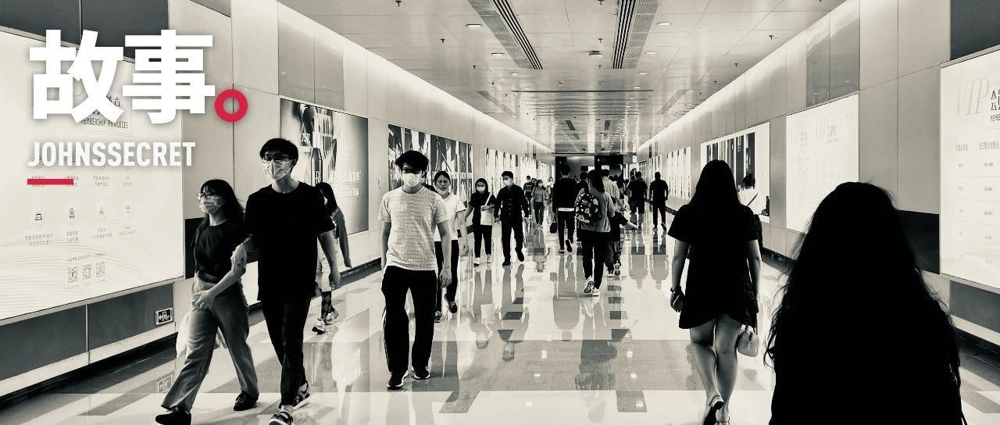

为什么会社会性抑郁？因为我是活生生的人
在 Covid-19 疫情的第三年，我才正式直面了一次时长一个月的静默。很多人都说，比起某某地方的人来说我算是幸运的，每天与大海和朋友为伴，至少不是被憋在家里。
暂时关闭信息获取的渠道，去关注一些切实可以改善自己生活环境的事情。例如我最近开始很用心地在布置自己的家，除了白云发布外尽量不看其他社会新闻；
买一些有生机的东西吧，绿植也好，小狗猫咪也好，让家里看起来有点不一样的颜色；
找一个可以消磨时间的短期爱好，比如最近开始在学女性主义理论和电气工程基础；
想哭的时候就哭。不用觉得哭就显得懦弱，哭就放声哭，笑就开心笑，释放情绪比抑郁好；
寻找可以认真对话和沟通的朋友，互相倾诉或分享自己的经历。